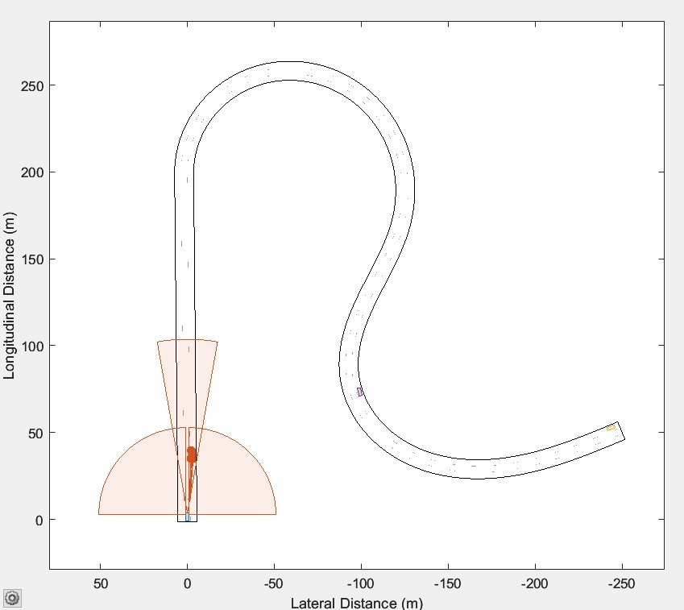
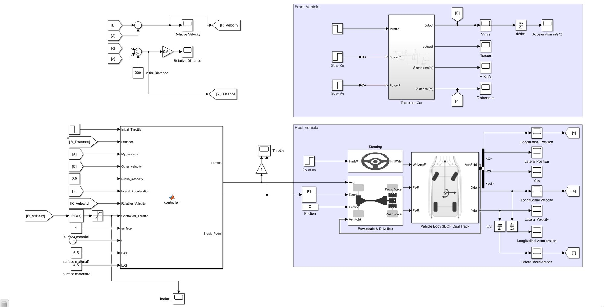
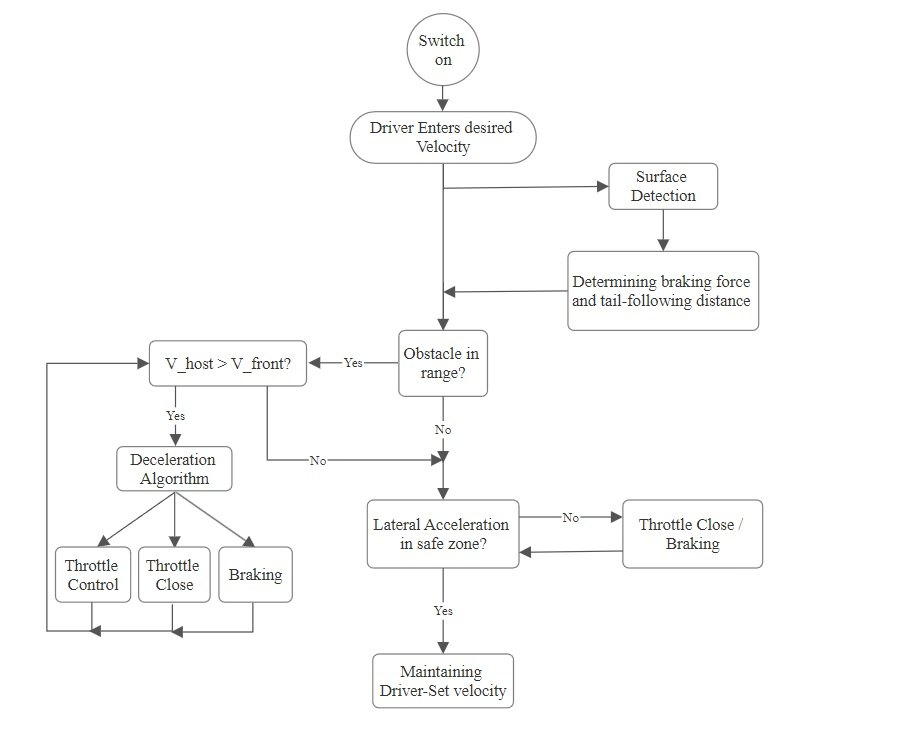
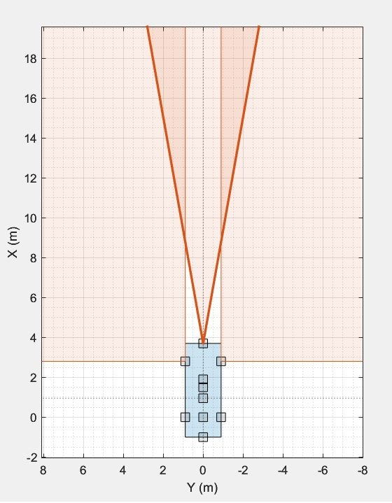

Adaptive Cruise Control Research
Standard adaptive cruise control only looks at the gap to the car ahead. I developed an ACC strategy that also accounts for the road surface and the car's lateral motion: it adjusts braking force and following distance to the grip available, and eases off the throttle when cornering gets too hard. I built and tested the full system in MATLAB/Simulink. The work became my BSc thesis and a peer-reviewed paper.

Two vehicles, one closed loop
The model simulates a host car and the car in front of it. The ACC controller sits between them and decides throttle and braking every time step.


Surface first, then distance, then comfort
The driver sets a speed. The controller first detects the road surface and uses it to set the braking force and the following distance it can safely rely on.
If a car is in range and the host is faster, a deceleration algorithm chooses between easing the throttle, closing it, or braking. When the road is clear, it checks lateral acceleration: if cornering leaves the safe zone, it closes the throttle or brakes, otherwise it holds the driver's set speed.

Tested on curves, not just straights
Following a car on a straight road is the easy case. The controller was tested on a winding road where lateral acceleration matters, with a modelled forward sensor measuring the distance and relative speed of the car ahead.
The host vehicle uses a 3-DOF dual-track body with steering, powertrain and driveline, so braking and cornering behave like a real car rather than a point mass.
Safer, smoother, more efficient
Compared with a standard approach, the new tail-following method and throttle controller cut maximum deceleration by about 40% on average when following another vehicle, and reduced the need for braking. Making lateral motion part of the comfort objective also gave a 10% improvement in fuel efficiency.
Foroutan Moharrami, M. & Mohammadi, M. A New Adaptive Cruise Control Strategy Considering Road Conditions. AUT Journal of Mechanical Engineering, 7(4), 355–366.
/stack